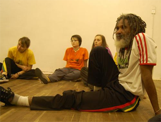

Семинар с Мештре Коброй Манса в Питере
В конце сентября 2009 года в северной столице прошел первый семинар с Мештре Кобра Манса. Мештре сразу предупредил, что это событие будет похоже на марафон, так, что начинать нужно потихоньку и рассчитывать свои силы. И правда, семинар был насыщенным во всех отношениях – сильная физическая и музыкальная часть были подкреплены жизненными наставлениями мастера.
Надо отдать должное Мастеру и сказать о том, что он проявил колоссальное терпение во время семинара, неустанное объясняя, повторяя и отвечая на самые разнообразные вопросы. Поражает способность Мештре отвечать даже на самые, казалось бы, тривиальные вещи так, что и опытный капоэйрист может найти в его словах новый смысл.
На самом первом занятии Мештре уделил внимание настройке беримбау, что имеет большое значение в раскрытии потенциала этого инструмента. Важно соблюдать те рекомендации, которые дал Мештре, чтобы инструмент служил долго и хорошо звучал.
Мештре не раз говорил о том, что музыка капоэйры является её душой, поэтому исполнять её нужно с чувством и эмоциями. Умение играть на инструментах, и петь ладаиньи, лувасау и кохиду отличает капоэйристов от игроков капоэйры, которых итак уже достаточно. Мештре сказал, что как и в других формах традиционной музыки, первостепенное значение имеют не столько слова, сколько мелодия и игра интонациями.
Физическая часть была сложной для всех. Много внимания Мештре обращал на игру корпусом, жингу, которая позволяет непредсказуемо перемещаться и ловко уходить от атак, постоянную защиту лица и, конечно, визуальный контакт с оппонентом. Эти вещи составляют основу капоэйры ангола. Когда вы играете капоэйру ангола необходимо также внимательно следить за всеми движениями противника, изучать его игру, действовать спокойно, просчитывать следующее движение. Анголейру также должен вкладывать красоту в каждое свое движение, проявлять изобретательность и творческий подход. Нам следует научиться добавлять «соли» в наши движения, сделать их вкусными.
Почетным гостем семинара был мастер традиционной капоэйры Мештре Бандейра, который признался, что объяснения Кобриньи были интересны и для него, хотя он имеет сорок лет опыта занятий капоэйрой. Люди часто ошибочно полагают, что они уже научились делать такие базовые движения как негачива или холе. Но необходимость постоянно тренировать их на самом деле все равно остается.
Кроме физических и музыкальных классов, Мештре Кобринья также беседовал с учениками на различные темы, в которых он выражал свои взгляды на жизнь человека. Например, Мештре сказал, что каждый человек обязан постоянно работать над собой. Это значит, что чем бы ты ни занимался, ты должен делать сегодня и сейчас все лучшее, что в твоих силах, а завтра еще улучшить этот результат. В этом случае, человек засыпает с удовлетворением от прожитого дня и просыпается, полным сил и стремлений. Это обязательство, как говорит мастер, есть у всех людей. Однако, капоэйристы обязаны работать над собой в два раза больше – в капоэйре и вне капоэйры.